| DES ÉQUILIBRES 12 mai - 11 juin 2011 Exposition personnelle, La Noire Galerie, Paris Installation in situ + sculptures + dessins www.lanoiregalerie.com LA MAÎTRISE DE LA DIAGONALE, 2011 Installation in situ, miroir, câblage, poulie, métal Dimensions variables Courtesy Nathalie Miltat, Paris |
 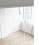
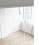 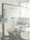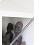
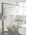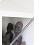 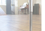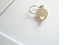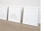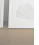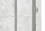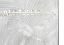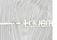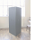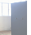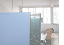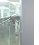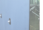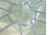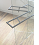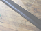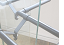
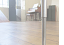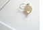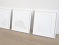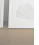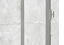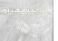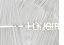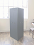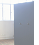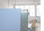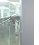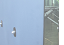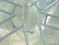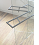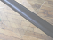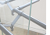